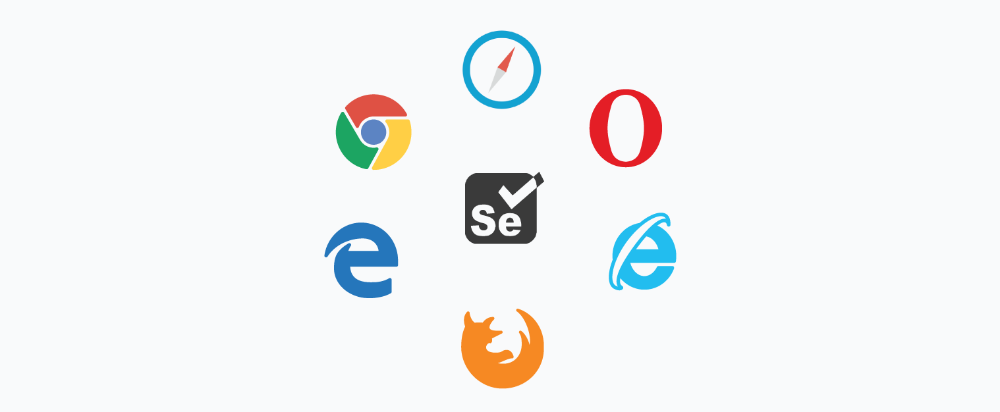
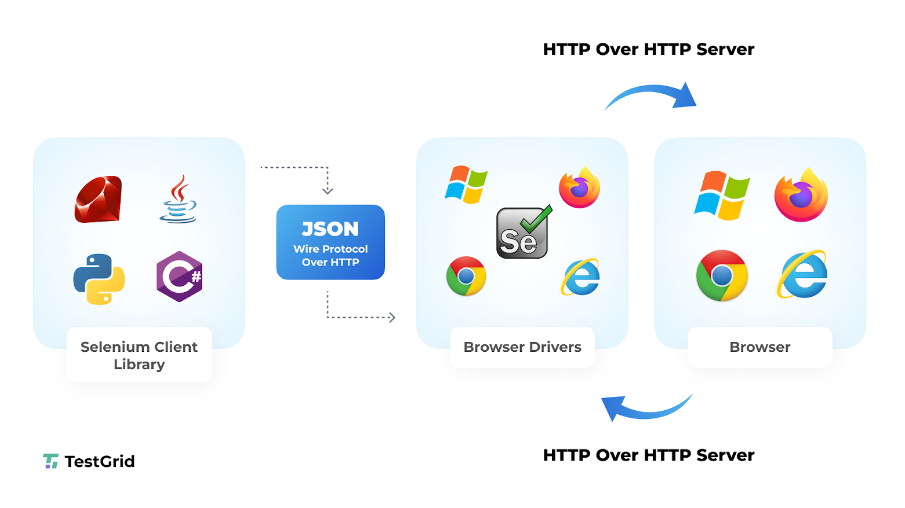
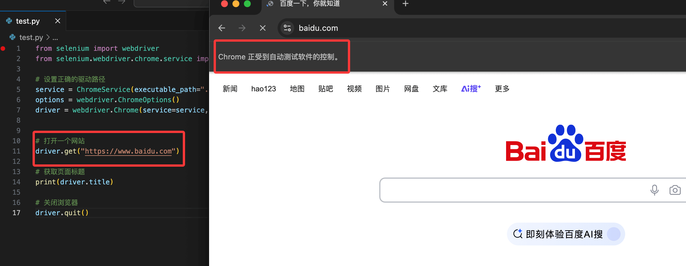
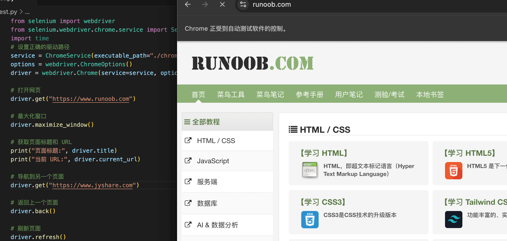
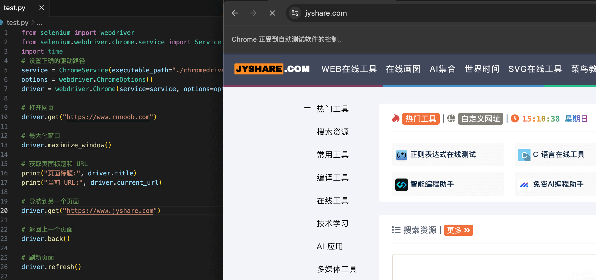
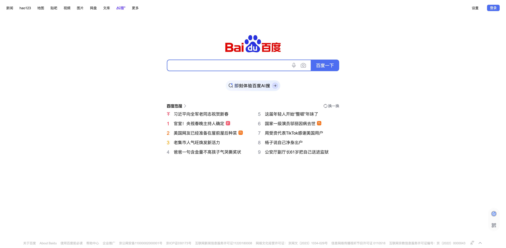

Selenium 是一个用于自动化 Web 浏览器操作的工具集。
Selenium主要用于 Web 应用程序的自动化测试。
Selenium支持多种编程语言（如 Python、Java、C#、JavaScript 等），并且可以在多种浏览器（如 Chrome、Firefox、Edge、Safari 等）和操作系统（如 Windows、macOS、Linux）上运行。
Selenium 的核心功能是模拟用户在浏览器中的操作，例如点击按钮、输入文本、导航页面等。
软件测试工程师
开发人员（前端、后端、全栈）
数据分析师和数据科学家
DevOps 工程师
学生和编程爱好者
技术经理和团队负责人
创业者和产品经理
Selenium 是一个功能强大的自动化测试工具，适用于 Web 应用程序的自动化测试和其他浏览器自动化任务。
通过 Selenium，你可以编写脚本来模拟用户在浏览器中的操作，从而提高测试效率。
编程基础（如 Python、Java、JavaScript 等）
Web 开发基础（HTML、CSS、JavaScript）
浏览器开发者工具（如 Chrome DevTools）
版本控制工具（如 Git，可选）
测试基础（如单元测试、断言，可选）
操作系统和命令行基础
学习资源（官方文档、教程、书籍）
学习编程基础（如 Python 或 Java）。
学习 Web 开发基础（HTML、CSS、JavaScript）。
熟悉浏览器开发者工具。
学习 Selenium 基础（环境搭建、元素定位、元素操作）。
实践项目（如自动化登录、表单提交、数据抓取等）。
学习高级主题（如等待机制、浏览器操作、测试框架集成）。
下面是一个使用 Python 编写的简单 Selenium 脚本示例，这个脚本会打开 Chrome 浏览器，访问百度首页，并在搜索框中输入 "Runoob" 并点击搜索按钮。
webdriver.Chrome()：创建一个 Chrome WebDriver 实例。driver.get("https://www.baidu.com")：打开百度首页。driver.find_element_by_name("wd")：查找页面中 name 属性为 "wd" 的元素（即搜索框）。search_box.send_keys("Runoob")：在搜索框中输入 "Runoob"。search_box.send_keys(Keys.RETURN)：模拟按下回车键，触发搜索。driver.quit()：关闭浏览器。Selenium 下载：https://www.selenium.dev/downloads/
Selenium 中文文档： https://www.selenium.dev/zh-cn/documentation/
Github 开源地址：https://github.com/SeleniumHQ
Selenium 是一个广泛使用的自动化测试工具，主要用于 Web 应用程序的自动化测试。
Selenium 支持多种编程语言（如 Java、Python、C#、Ruby、JavaScript 等），并允许用户控制浏览器执行自动化任务，例如点击按钮、填写表单、验证页面内容等。
Selenium 可以在多种浏览器（如 Chrome、Firefox、Edge、Safari 等）和操作系统（如 Windows、macOS、Linux）上运行。

Selenium 由多个组件组成，每个组件都有其特定的用途。以下是 Selenium 的主要组件：
Selenium WebDriver：这是 Selenium 的核心组件，用于直接与浏览器进行交互。WebDriver 提供了丰富的 API，允许开发者通过代码控制浏览器的行为，如打开网页、点击按钮、填写表单等。
Selenium IDE：这是一个浏览器插件，主要用于录制和回放用户的操作。Selenium IDE 适合初学者快速创建简单的测试脚本，但它不支持复杂的逻辑和条件判断。
Selenium Grid：这是一个用于并行执行测试的工具。通过 Selenium Grid，你可以在多个浏览器和操作系统上同时运行测试，从而加快测试速度并提高测试覆盖率。
自动化测试
用于 Web 应用程序的功能测试、回归测试、兼容性测试等。
可以模拟用户操作，验证页面功能是否正常。
网页抓取
用于从网页中提取数据，例如商品信息、新闻内容等。
可以处理动态加载的内容（如通过 JavaScript 加载的数据）。
自动化任务
用于执行重复性的网页操作，例如自动填写表单、自动登录等。
跨浏览器测试
用于验证 Web 应用程序在不同浏览器和操作系统上的兼容性。

无法处理非浏览器操作：Selenium 只能控制浏览器，无法直接操作桌面应用程序或移动应用程序。
动态内容处理复杂：对于高度动态的网页（如单页应用），可能需要额外的等待机制或 JavaScript 执行。
性能开销：由于需要启动浏览器实例，Selenium 的执行速度相对较慢。
| 工具 | 优点 | 缺点 |
|---|---|---|
| Selenium | 开源、跨平台、支持多种浏览器和编程语言 | 需要编写代码，学习曲线较陡 |
| Puppeteer | 专为 Chrome 设计，性能较好 | 仅支持 Chrome/Chromium |
| Playwright | 支持多种浏览器，功能强大 | 相对较新，社区资源较少 |
| Cypress | 专为测试设计，易于使用 | 仅支持现代浏览器，不支持跨浏览器测试 |
在开始使用 Selenium 之前，我们需要先安装它。以下是安装 Selenium 的详细步骤。
Selenium 支持多种编程语言，但本系列教程将以 Python 为例进行讲解。
如果你还没有安装 Python，可以按照以下步骤进行安装：
python --version 或 python3 --version，检查 Python 是否安装成功。Python 的内容也可以参考：Python 教程
安装好 Python 后，我们可以使用 pip 来安装 Selenium。pip 是 Python 的包管理工具，用于安装和管理 Python 库。
打开命令行，输入以下命令来安装 Selenium：
pip install selenium
如果你使用的是 Python3，可能需要使用 pip3：
pip3 install selenium
安装完成后，可以通过以下命令检查 Selenium 是否安装成功：
pip show selenium
如果显示了 Selenium 的版本信息，说明安装成功。
Selenium 需要通过浏览器驱动来控制浏览器。
不同的浏览器需要不同的驱动，以下是常见浏览器的驱动下载地址：
下载适合你浏览器版本的驱动，并将其路径添加到系统的环境变量中，或者将驱动文件放在 Python 脚本所在的目录下。
安装好 Selenium 和浏览器驱动后，我们就可以开始编写自动化脚本了。
以下是一个简单的示例，展示如何使用 Selenium 打开一个网页并获取页面标题。
首先，我们需要在 Python 脚本中导入 Selenium 的 webdriver 模块：
from selenium import webdriver
接下来，我们需要启动一个浏览器实例，本系列会以 Chrome 为例。
driver = webdriver.Chrome(executable_path='path/to/chromedriver')
选择浏览器并初始化 WebDriver：
从 Selenium 4 开始，在浏览器驱动的管理方式上发生了变化：Selenium 4 尝试自动检测系统中安装的浏览器版本，并下载相应的驱动程序，这意味着用户不再需要手动下载和设置驱动程序路径，除非他们需要特定版本的驱动程序。
当国内的网络环境，自动检测下载驱动需要不一样的网络环境，所以建议手动下载驱动，然后指定驱动路径。
在 Selenium 4 中，不再直接在 webdriver.Chrome 中设置驱动程序路径，而是通过引入 Service 对象来设置。这样可以避免弃用警告，并确保驱动程序的正确加载。例如：
如果你将 chromedriver 放在了系统路径中，或者将其放在了 Python 脚本所在的目录下，可以省略 executable_path 参数：
driver = webdriver.Chrome()
使用 get 方法打开一个网页：
driver.get('https://www.baidu.com')
我们可以使用 title 属性来获取当前页面的标题：
print(driver.title)
完成操作后，记得关闭浏览器：
driver.quit()
将以上步骤组合起来，完整的代码如下：
以上代码执行成功后，会打开浏览器，并打开网页，如下所示：

打开完成后，会输出网页标题：
百度一下，你就知道
有时候一个网页加载太慢，会导致异常出现，为了能够顺利抓取数据，可以让页面加载几秒后再通过执行 JavaScript 代码 window.stop()，强制停止页面加载。
除了打开网页和获取标题，Selenium 还支持许多其他操作。以下是一些常见的操作示例：
可以使用 find_element 方法来查找页面上的元素。例如，查找一个输入框并输入文本：
可以使用 click 方法来点击按钮：
有时页面元素不会立即加载完成，我们可以使用 WebDriverWait 来等待元素出现：
Selenium WebDriver 是 Selenium 的核心组件，它提供了与浏览器交互的 API，允许开发者通过编程语言控制浏览器并执行各种操作。
Selenium WebDriver 支持多种浏览器（如 Chrome、Firefox、Edge 等）。
启动浏览器前，需要下载并配置对应的浏览器驱动（如 ChromeDriver、GeckoDriver 等），详细可参见 selenium 安装。
启动浏览器的代码示例（Python）。
在 Selenium 4 中，引入了 Service 对象来设置驱动程序路径，这种方式更加灵活，且符合 Selenium 4 的设计规范。
导入所需的模块（webdriver 和 ChromeService）。
创建 ChromeService 对象，指定 ChromeDriver 的路径。
创建 ChromeOptions 对象，用于配置浏览器的启动选项。
使用 webdriver.Chrome() 启动 Chrome 浏览器，并传入 service 和 options 参数。
在 Selenium 3 及之前的版本中，通常直接在 webdriver.Chrome() 中设置驱动程序路径，例如：
使用 quit() 方法关闭浏览器并结束 WebDriver 会话。
driver.quit()
使用 get() 方法打开指定的 URL。
driver.get("https://www.example.com")
使用 close() 方法关闭当前标签页。
driver.close()
如果只有一个标签页，close() 会关闭浏览器。
使用 maximize_window() 方法将浏览器窗口最大化。
driver.maximize_window()
使用 minimize_window() 方法将浏览器窗口最小化。
driver.minimize_window()
使用 set_window_size(width, height) 方法设置浏览器窗口的大小。
driver.set_window_size(1024, 768) # 设置窗口大小为 1024x768 像素
使用 fullscreen_window() 方法将浏览器窗口设置为全屏模式。
driver.fullscreen_window()
使用 back() 方法返回上一个页面。
使用 forward() 方法前进到下一个页面。
driver.get("https://www.baidu.com")
driver.get("https://www.runoob.com")
driver.back() # 返回 baidu.com
driver.forward() # 前进到 runoob.com
使用 refresh() 方法刷新当前页面。
driver.refresh()
使用 title 属性获取当前页面的标题。
title = driver.title
print("页面标题:", title)
使用 current_url 属性获取当前页面的 URL。
url = driver.current_url
print("当前 URL:", url)
以上代码执行后会执行以下步骤：
启动 Chrome 浏览器。
打开指定网页（https://www.runoob.com）。

最大化浏览器窗口。
获取并打印页面标题和 URL。
导航到另一个网页（https://www.jyshare.com）。

返回上一个页面。
刷新当前页面。
关闭浏览器。
输出结果为：
页面标题: 菜鸟教程 - 学的不仅是技术，更是梦想！ 当前 URL: https://www.runoob.com/
在 Selenium 中，元素定位是自动化测试和网页操作的核心。
通过定位元素，可以对其进行点击、输入文本、获取属性等操作。
什么是元素定位？
元素定位是指通过某种方式找到网页中的特定元素（如按钮、输入框、链接等）。
为什么需要元素定位？
自动化操作需要精确找到目标元素，才能执行后续操作（如点击、输入等）。
定位元素的唯一性。
确保定位到的元素是唯一的，避免操作错误的元素。
Selenium 提供了多种元素定位方法，常用的有以下几种：
1、通过 ID 定位
方法：find_element(By.ID, "id_value")
说明：通过元素的 id 属性定位。
from selenium.webdriver.common.by import By element = driver.find_element(By.ID, "username")
2、通过 Name 定位
方法：find_element(By.NAME, "name_value")
说明：通过元素的 name 属性定位。
element = driver.find_element(By.NAME, "password")
3、通过 Class Name 定位
方法：find_element(By.CLASS_NAME, "class_name")
说明：通过元素的 class 属性定位。
element = driver.find_element(By.CLASS_NAME, "submit-btn")
4、通过 Tag Name 定位
方法：find_element(By.TAG_NAME, "tag_name")
说明：通过元素的标签名定位（如 <div>、<input> 等）。
element = driver.find_element(By.TAG_NAME, "input")
5、通过 CSS 选择器定位
方法：find_element(By.CSS_SELECTOR, "css_selector")
说明：通过 CSS 选择器定位元素。
element = driver.find_element(By.CSS_SELECTOR, "input#username")
6、通过 XPath 定位
方法：find_element(By.XPATH, "xpath_expression")
说明：通过 XPath 表达式定位元素。
element = driver.find_element(By.XPATH, "//input[@id='username']")
7、通过 Link Text 定位
方法：find_element(By.LINK_TEXT, "link_text")
说明：通过链接的文本内容定位（适用于 <a> 标签）。
element = driver.find_element(By.LINK_TEXT, "Click Here")
8、通过 Partial Link Text 定位
方法：find_element(By.PARTIAL_LINK_TEXT, "partial_link_text")
说明：通过链接的部分文本内容定位。
element = driver.find_element(By.PARTIAL_LINK_TEXT, "Click")
优先使用唯一属性：
尽量使用 id、name 等唯一属性定位元素。
避免使用动态属性：
如果元素的属性是动态生成的（如随机 ID），避免直接使用这些属性定位。
使用相对定位：
使用 XPath 或 CSS 选择器结合元素的层级关系定位。
添加等待机制：
使用隐式等待或显式等待确保元素加载完成后再进行操作。
Selenium 提供了多种元素定位方法，每种方法适用于不同的场景。以下是常用的元素定位方法：
find_element_by_idfind_element_by_id 是通过元素的 id 属性来定位元素。id 属性在 HTML 中是唯一的，因此这种方法通常是最直接和高效的。
find_element_by_namefind_element_by_name 是通过元素的 name 属性来定位元素。name 属性在表单元素中非常常见。
find_element_by_class_namefind_element_by_class_name 是通过元素的 class 属性来定位元素。class 属性通常用于样式定义，可能会有多个元素共享同一个 class。
find_element_by_tag_namefind_element_by_tag_name 是通过元素的标签名来定位元素。标签名如 div、input、a 等。
find_element_by_css_selectorfind_element_by_css_selector 是通过 CSS 选择器来定位元素。CSS 选择器非常灵活，可以组合使用多种条件。
find_element_by_xpathfind_element_by_xpath 是通过 XPath 表达式来定位元素。XPath 是一种在 XML 文档中定位节点的语言，功能非常强大。
find_element_by_link_textfind_element_by_link_text 是通过链接的文本内容来定位元素。适用于定位 <a> 标签。
find_element_by_partial_link_textfind_element_by_partial_link_text 是通过链接的部分文本内容来定位元素。适用于文本较长或部分匹配的场景。
find_elements）有时我们需要定位多个元素，而不是单个元素。Selenium 提供了 find_elements 方法，返回一个元素列表。
find_elements 方法与 find_element 方法的使用方式相同，只是返回的是一个列表。
在 Web 应用中，有些元素的属性是动态生成的，每次刷新页面时都会变化。处理这类动态元素时，可以采用以下技巧：
在 XPath 或 CSS 选择器中，使用相对路径而不是绝对路径。相对路径可以避免因元素位置变化而导致的定位失败。
对于动态生成的 id 或 class，可以使用部分匹配的方法来定位元素。例如，使用 contains 函数。
动态元素可能不会立即出现在页面上，可以使用 Selenium 的等待机制来等待元素出现。
在某些情况下，可以通过执行 JavaScript 来定位动态元素。
Selenium 提供了丰富的元素定位方法，掌握这些方法可以帮助我们高效地定位页面元素。
对于动态元素，灵活运用相对路径、部分匹配、等待机制和 JavaScript 定位等技巧，可以大大提高自动化测试的稳定性和可靠性。
以下是一个完整的示例，展示如何使用多种定位方法找到元素并执行操作：
在 Selenium 中，定位到元素后，可以对其进行各种操作，例如点击、输入文本、获取属性等。
以下是 Selenium 中常用的元素操作及其详细说明。
| 操作类型 | 方法 | 说明 | 示例 |
|---|---|---|---|
| 输入文本 | send_keys("text") | 向输入框或文本区域输入指定的文本。 | element.send_keys("testuser") |
| 点击元素 | click() | 点击按钮、链接或其他可点击的元素。 | element.click() |
| 清除输入框内容 | clear() | 清除输入框或文本区域中的内容。 | element.clear() |
| 获取元素属性 | get_attribute("attribute_name") | 获取元素的指定属性值（如 value、href、class 等）。 | value = element.get_attribute("value") |
| 获取元素文本 | text | 获取元素的可见文本内容。 | print(element.text) |
| 复选框/单选框操作 | is_selected() 和 click() | 检查复选框或单选框是否被选中，并选中或取消选中。 | if not checkbox.is_selected(): checkbox.click() |
| 下拉列表操作 | Select 类的 select_by_index、select_by_value、select_by_visible_text | 通过索引、值或可见文本选择下拉列表的选项。 | dropdown.select_by_visible_text("China") |
| 鼠标操作 | ActionChains 类的 click、double_click、context_click、drag_and_drop、move_to_element | 执行复杂的鼠标操作，如点击、双击、拖放、悬停等。 | actions.move_to_element(element).perform() |
| 键盘操作 | Keys 类的 send_keys(Keys.KEY_NAME) | 模拟键盘操作，如按下回车键、Tab 键、组合键等。 | element.send_keys(Keys.ENTER) |
| 文件上传 | send_keys("file_path") | 通过 <input type="file"> 元素上传文件。 | element.send_keys("/path/to/file.txt") |
| 执行 JavaScript | execute_script("javascript_code") | 执行 JavaScript 代码，用于复杂的操作或修改页面内容。 | driver.execute_script("window.scrollTo(0, document.body.scrollHeight);") |
在自动化测试中，经常需要向输入框中输入文本，Selenium 提供了send_keys方法来实现这一功能。
在上面的代码中，我们首先定位了一个输入框元素，然后使用send_keys方法向其中输入了文本"your_username"。
点击操作是自动化测试中最常见的操作之一。Selenium提供了click方法来模拟用户点击元素。
在这个例子中，我们定位了一个按钮元素，并使用click方法模拟了用户点击该按钮的操作。
有时我们需要清除输入框中已有的内容，然后再输入新的内容。Selenium提供了clear方法来实现这一功能。
在这个例子中，我们首先清除了输入框中的内容，然后输入了新的文本"new_username"。
在自动化测试中，有时需要获取元素的属性值。Selenium提供了get_attribute方法来获取元素的属性。
在这个例子中，我们获取了一个元素的class属性值，并将其打印出来。
有时我们需要获取元素内部的文本内容。Selenium提供了text属性来获取元素的文本。
在这个例子中，我们获取了一个元素的文本内容，并将其打印出来。
复选框和单选框是Web表单中常见的元素。Selenium提供了click方法来操作这些元素。
在这个例子中，我们首先检查复选框是否已经被选中，如果没有被选中，则点击选中它。
单选框的操作与复选框类似，我们也是先检查单选框是否已经被选中，如果没有被选中，则点击选中它。
下拉列表是Web表单中常见的元素之一。Selenium提供了Select类来方便地操作下拉列表。
在这个例子中，我们首先定位了一个下拉列表元素，然后使用Select类来操作它。我们可以通过可见文本、值或索引来选择下拉列表中的选项。
本文详细介绍了Selenium中常见的元素操作，包括输入文本、点击元素、清除输入框内容、获取元素属性和文本、操作复选框和单选框，以及处理下拉列表。掌握这些基础操作是进行自动化测试的关键。希望本文能帮助你更好地理解和使用Selenium进行Web自动化测试。
在 Selenium 中，等待机制是确保页面元素加载完成后再进行操作的关键。
由于网页加载速度受网络、服务器性能等因素影响，直接操作未加载完成的元素会导致脚本失败。
Selenium 提供了多种等待机制来解决这一问题。
隐式等待是一种全局性的等待机制，它会在查找元素时等待一定的时间。如果在指定的时间内找到了元素，Selenium 会立即继续执行后续操作；如果超时仍未找到元素，则会抛出 NoSuchElementException 异常。
隐式等待通过 implicitly_wait() 方法来设置。这个方法只需要调用一次，之后的所有元素查找操作都会遵循这个等待时间。
优点：
缺点：
显式等待是一种更为灵活的等待机制，它允许你为特定的操作设置等待条件。显式等待通常与 WebDriverWait 类和 expected_conditions 模块一起使用。
显式等待的基本用法如下：
expected_conditions 模块提供了多种预定义的等待条件，以下是一些常用的条件：
presence_of_element_located：等待元素出现在 DOM 中。visibility_of_element_located：等待元素出现在 DOM 中并且可见。element_to_be_clickable：等待元素可点击。text_to_be_present_in_element：等待元素的文本包含指定的文本。优点：
缺点：
固定等待是一种最简单的等待机制，它通过 time.sleep() 方法让脚本暂停执行指定的时间。无论页面是否加载完成，脚本都会等待指定的时间后再继续执行。
优点：
缺点：
作用：动态设置等待条件，可以自定义轮询频率和忽略特定异常。
方法：WebDriverWait 结合 polling_every 和 ignoring
特点：更灵活，适用于需要动态调整等待时间的场景。
在实际的自动化测试中，建议根据具体的测试需求选择合适的等待机制。通常情况下，显式等待是最为推荐的方式，因为它能够提供更好的灵活性和效率。
以下是一个完整的示例，展示如何使用隐式等待和显式等待：
Selenium 不仅可以操作网页元素，还可以控制浏览器本身的行为，例如管理窗口、处理弹窗、操作 Cookies、执行 JavaScript 等。
以下是 Selenium 中常用的浏览器操作及其说明:
| 操作类型 | 方法 | 说明 |
|---|---|---|
| 打开新窗口 | execute_script("window.open('URL');") | 使用 JavaScript 打开新窗口。 |
| 切换窗口 | switch_to.window(window_handle) | 切换到指定的窗口句柄。 |
| 关闭窗口 | close() | 关闭当前窗口。 |
| 最大化窗口 | maximize_window() | 最大化浏览器窗口。 |
| 设置窗口大小 | set_window_size(width, height) | 设置浏览器窗口的大小。 |
| 全屏模式 | fullscreen_window() | 将浏览器窗口设置为全屏模式。 |
| 打开网页 | get(url) | 打开指定的 URL。 |
| 前进和后退 | back() 和 forward() | 返回上一个页面或前进到下一个页面。 |
| 刷新页面 | refresh() | 刷新当前页面。 |
| 处理 Alert 弹窗 | switch_to.alert 结合 accept() 或 dismiss() | 处理 Alert 弹窗，点击确认或取消。 |
| 处理 Confirm 弹窗 | switch_to.alert 结合 accept() 或 dismiss() | 处理 Confirm 弹窗，点击确认或取消。 |
| 处理 Prompt 弹窗 | switch_to.alert 结合 send_keys() 和 accept() 或 dismiss() | 处理 Prompt 弹窗，输入文本后点击确认或取消。 |
| 添加 Cookie | add_cookie(cookie_dict) | 添加指定的 Cookie。 |
| 获取 Cookie | get_cookie(name) 或 get_cookies() | 获取指定 Cookie 或所有 Cookies。 |
| 删除 Cookie | delete_cookie(name) 或 delete_all_cookies() | 删除指定 Cookie 或所有 Cookies。 |
| 执行 JavaScript | execute_script(script) | 执行指定的 JavaScript 代码。 |
| 获取 JavaScript 返回值 | execute_script("return ...") | 执行 JavaScript 并返回结果。 |
| 切换到 iframe | switch_to.frame(iframe_element) | 切换到指定的 iframe。 |
| 切换回主页面 | switch_to.default_content() | 切换回主页面。 |
在 Web 应用程序中，弹窗（如 alert、confirm、prompt）是常见的用户交互方式。Selenium 提供了 Alert 类来处理这些弹窗。
alert 弹窗通常用于显示一条消息，用户只能点击"确定"按钮关闭弹窗。
confirm 弹窗通常用于确认操作，用户可以选择"确定"或"取消"。
prompt 弹窗通常用于获取用户输入，用户可以输入文本并选择"确定"或"取消"。
在 Web 应用程序中，用户可能会打开多个窗口或标签页。Selenium 提供了 switch_to.window() 方法来切换窗口或标签页。
切换标签页与切换窗口类似，因为每个标签页都是一个独立的窗口句柄。
iframe 是嵌入在网页中的另一个网页。Selenium 提供了 switch_to.frame() 方法来切换到 iframe。
在 iframe 中操作完成后，可以使用 switch_to.default_content() 方法切换回主页面。
Selenium 提供了 get_cookies()、add_cookie()、delete_cookie() 等方法来操作浏览器的 Cookies。
Selenium 提供了 execute_script() 方法来执行 JavaScript 代码。
以下是一个完整的示例，展示如何使用多种浏览器操作：
Selenium 提供了丰富的鼠标和键盘操作功能，可以模拟用户的交互行为，例如点击、双击、拖放、悬停、输入文本、按下组合键等。
以下是 Selenium 中常用的鼠标和键盘操作及其说明：
| 操作类型 | 方法 | 说明 |
|---|---|---|
| 点击 | click(element) 或 click() | 点击指定的元素或当前鼠标位置。 |
| 双击 | double_click(element) 或 double_click() | 双击指定的元素或当前鼠标位置。 |
| 右键点击 | context_click(element) 或 context_click() | 右键点击指定的元素或当前鼠标位置。 |
| 拖放 | drag_and_drop(source, target) | 将源元素拖放到目标元素。 |
| 悬停 | move_to_element(element) | 将鼠标移动到指定元素上。 |
| 按住和释放 | click_and_hold(element) 和 release() | 按住指定元素并释放，用于实现拖拽操作。 |
| 操作类型 | 方法 | 说明 |
|---|---|---|
| 输入文本 | send_keys("text") | 向输入框或文本区域输入指定的文本。 |
| 按下组合键 | send_keys(Keys.CONTROL + 'a') | 模拟按下组合键（如 Ctrl + A）。 |
| 按下单个键 | send_keys(Keys.KEY_NAME) | 模拟按下单个键（如 Enter、Tab、Shift 等）。 |
| 释放按键 | key_up(key) | 释放按下的键。 |
| 键值 | 说明 |
|---|---|
Keys.ENTER | 回车键 |
Keys.TAB | Tab 键 |
Keys.SHIFT | Shift 键 |
Keys.CONTROL | Ctrl 键 |
Keys.ALT | Alt 键 |
Keys.ESCAPE | Esc 键 |
Keys.BACKSPACE | 退格键 |
Keys.SPACE | 空格键 |
Keys.ARROW_UP | 上箭头键 |
Keys.ARROW_DOWN | 下箭头键 |
Keys.ARROW_LEFT | 左箭头键 |
Keys.ARROW_RIGHT | 右箭头键 |
在 Selenium 中，鼠标操作主要通过 ActionChains 类来实现。ActionChains 类允许我们执行复杂的鼠标操作，如点击、双击、右键点击、拖放和悬停等。
拖放操作是指将一个元素拖动到另一个位置或另一个元素上。
悬停操作是指将鼠标指针悬停在某个元素上，通常用于触发下拉菜单或显示提示信息。
Selenium 中的键盘操作主要通过 Keys 类来实现。Keys 类提供了各种键盘按键的模拟操作，包括发送组合键和特殊键操作。
组合键操作是指同时按下多个键，例如 Ctrl + C（复制）或 Ctrl + V（粘贴）。
特殊键操作是指模拟按下键盘上的特殊键，如 Enter、Tab、Shift 等。
以下是一个完整的示例，展示如何使用鼠标和键盘操作：
在 Selenium 中，文件上传和下载是常见的自动化操作需求。
文件上传：通过 send_keys() 方法将文件路径传递给 <input type="file"> 元素。
文件下载：通过配置浏览器的下载选项，并触发下载操作，等待文件下载完成。
注意事项：确保文件路径正确，并根据实际需求调整等待时间和浏览器配置。
以下是文件上传和下载的详细说明：
| 方法 | 说明 |
|---|---|
send_keys("file_path") |
将文件路径传递给 <input type="file"> 元素，实现文件上传。 |
execute_script() |
如果文件上传元素是隐藏的，可以使用 JavaScript 使其可见。 |
| 第三方工具（如 AutoIT） | 如果文件上传不是通过 <input type="file"> 实现的，可能需要使用第三方工具。 |
| 方法 | 说明 |
|---|---|
| 配置浏览器下载选项 | 通过 ChromeOptions 或 FirefoxOptions 设置下载路径、禁用提示等。 |
click() |
点击下载按钮，触发文件下载。 |
| 等待文件下载完成 | 使用 time.sleep() 或循环检查文件是否下载完成。 |
| 检查下载文件 | 使用 os.listdir() 检查下载目录中的文件。 |
| 问题 | 解决方法 |
|---|---|
| 文件上传元素不可见 | 使用 JavaScript 使元素可见：driver.execute_script("arguments[0].style.display = 'block';", element) |
非 <input type="file"> 元素 |
使用第三方工具（如 AutoIT 或 PyWin32）模拟文件选择对话框。 |
| 下载路径配置失败 | 确保下载路径存在且可写，并正确配置浏览器选项。 |
| 文件未下载完成 | 增加等待时间，或使用循环检查文件是否下载完成。 |
文件上传是 Web 应用程序中常见的功能之一。
在 Selenium 中，文件上传通常通过<input type="file">元素实现。
以下是实现文件上传的步骤：
定位文件上传元素：首先，我们需要定位到文件上传的输入框元素。通常，这个元素是一个<input>标签，类型为file。
发送文件路径：一旦定位到文件上传元素，我们可以使用send_keys()方法将文件的绝对路径发送到该元素。
这将触发文件选择对话框，并自动选择指定的文件。
提交表单：在某些情况下，文件上传后需要提交表单。你可以通过点击提交按钮来完成这一操作。
文件下载操作在 Selenium 中稍微复杂一些，因为涉及到浏览器的下载对话框。
以下是实现文件下载的步骤：
设置下载路径：首先，我们需要设置浏览器的下载路径。这可以通过设置浏览器的首选项来实现。
这将设置浏览器的默认下载路径，并禁用下载提示。
触发下载：接下来，我们需要找到触发下载的链接或按钮，并点击它。
这将触发文件下载，并自动保存到之前设置的下载路径中。
等待下载完成：为了确保文件下载完成，我们可以使用time.sleep()或更智能的等待机制。
在某些情况下，浏览器可能会弹出下载对话框，询问用户是否保存文件。为了自动化处理这种情况，我们可以使用以下方法：
使用浏览器首选项：如上所述，通过设置浏览器的首选项，可以禁用下载对话框。
使用AutoIT或类似工具：如果无法通过浏览器首选项禁用下载对话框，可以使用AutoIT等工具来自动化处理对话框。
这将自动点击下载对话框中的"保存"按钮。
以下是一个完整的示例，展示如何配置 Chrome 浏览器的下载选项并下载文件：
Selenium Grid 是 Selenium 套件中的一个重要组件，它允许你在多个不同的机器、浏览器和操作系统上并行执行测试。
通过 Selenium Grid，你可以实现分布式测试，从而提高测试效率，缩短测试时间。
Selenium Grid 的核心思想是将测试任务分发到多个节点（Node）上执行，而这些节点由中心节点（Hub）统一管理。
Selenium Grid 采用 Hub-Node 架构：
在开始使用 Selenium Grid 之前，你需要进行一些基本的配置。以下是基于 Selenium 4 的配置步骤。
Selenium Grid 依赖于 Java 运行环境，因此首先需要安装 Java。你可以通过以下步骤安装 Java：
Selenium Server 是 Selenium Grid 的核心组件。你可以从 Selenium 官方网站 下载最新版本的 Selenium Server。
selenium-server-<version>.jar 文件。在配置好 Java 和 Selenium Server 后，你可以启动 Hub。打开命令行工具，导航到保存 selenium-server-<version>.jar 的目录，然后运行以下命令：
这将启动 Hub，默认情况下，Hub 会监听端口 4444。你可以通过浏览器访问 http://localhost:4444 来查看 Hub 的状态。
接下来，你需要启动一个或多个 Node 来执行测试任务。在另一台机器或同一台机器的不同终端中，运行以下命令：
其中，<hub-ip> 是 Hub 所在机器的 IP 地址。如果 Hub 和 Node 在同一台机器上，可以使用 localhost。
你可以通过命令行参数来配置 Node 的浏览器和操作系统。例如，以下命令配置了一个 Node，支持 Chrome 和 Firefox 浏览器：
配置好 Selenium Grid 后，你可以通过编写测试脚本来远程执行测试。以下是一个基于 Selenium 4 的 Python 示例。
首先，你需要安装 Selenium 的 Python 绑定：
以下是一个简单的测试脚本，它通过 Selenium Grid 在远程节点上执行测试：
保存脚本并运行它。脚本将通过 Selenium Grid Hub 将测试任务分发到合适的 Node 上执行。
在启动 Node 时，可以通过参数指定支持的浏览器和操作系统：
java -jar selenium-server-<version>.jar node --hub http://<hub-ip>:4444 --browser "browserName=chrome,platform=WINDOWS"
Selenium 提供了官方的 Docker 镜像，可以快速启动 Hub 和 Node：
# 启动 Hub docker run -d -p 4444:4444 --name selenium-hub selenium/hub # 启动 Node docker run -d --link selenium-hub:hub selenium/node-chrome
可以通过启动多个 Hub 和 Node，配置负载均衡，提高测试的并发能力。
Selenium 可以与多种测试框架集成，例如 unittest 和 pytest，从而实现更结构化的测试代码管理和测试报告生成。
unittest 集成unittest 是 Python 标准库中的一个测试框架，它提供了丰富的断言方法和测试组织方式。
我们可以将 Selenium 与 unittest 集成，以编写结构化的测试用例。
以下是一个简单的 Selenium 与 unittest 集成的示例：
setUp 方法：在每个测试用例执行之前运行，用于初始化测试环境。在这里，我们启动浏览器并打开Google首页。test_search 方法：这是一个测试用例，用于测试Google搜索功能。我们找到搜索框，输入"Selenium"，然后提交搜索。最后，我们断言页面标题中是否包含"Selenium"。tearDown 方法：在每个测试用例执行之后运行，用于清理测试环境。在这里，我们关闭浏览器。可以通过以下命令运行测试：
python -m unittest test_baidu_search.py
pytest 集成pytest 是另一个流行的Python测试框架，它提供了更简洁的语法和更强大的功能。我们可以将Selenium与pytest集成，以编写更灵活的测试用例。
以下是一个简单的Selenium与pytest集成的示例：
browser 夹具：这是一个pytest夹具，用于在每个测试用例执行之前启动浏览器，并在测试用例执行之后关闭浏览器。test_baidu_search 函数：这是一个测试用例，用于测试Google搜索功能。我们找到搜索框，输入"Selenium"，然后提交搜索。最后，我们断言页面标题中是否包含"Selenium"。可以通过以下命令运行测试：
pytest test_baidu_search.py
在自动化测试中，生成测试报告是非常重要的。我们可以使用pytest-html插件来生成HTML格式的测试报告。
pytest-html可以通过以下命令安装pytest-html插件：
在运行测试时，可以通过以下命令生成HTML格式的测试报告：
pytest --html=report.html
生成的report.html文件将包含测试的详细结果，包括通过的测试用例、失败的测试用例以及错误信息。
Selenium 4 引入了许多新特性，如相对定位器、改进的窗口管理、更好的 DevTools 支持等：
Selenium 提供了许多高级功能，可以帮助处理复杂的自动化测试场景。
以下是几个高级主题的详细说明，包括处理动态内容、验证码、代理、无头浏览器模式以及性能优化技巧。
动态内容是指网页上那些在页面加载后通过 JavaScript 或其他技术动态生成的内容。这些内容可能包括广告、用户评论、实时更新的数据等。处理动态内容是 Selenium 自动化测试中的一个常见挑战。
Selenium 提供了多种等待机制来处理动态内容，包括隐式等待（Implicit Wait）和显式等待（Explicit Wait）。
隐式等待：设置一个全局的等待时间，Selenium 会在查找元素时等待指定的时间。如果在指定时间内找到元素，则继续执行；否则抛出异常。
显式等待：针对特定的元素设置等待条件，直到条件满足或超时。显式等待更加灵活，适用于处理复杂的动态内容。
AJAX（Asynchronous JavaScript and XML）请求是动态内容的常见来源。
Selenium 可以通过等待 AJAX 请求完成来处理动态内容。
验证码（CAPTCHA）是一种用于区分人类用户和自动化脚本的安全机制。
由于验证码的设计初衷是防止自动化操作，因此在 Selenium 中处理验证码是一个复杂的问题。
在某些测试环境中，可以通过以下方式绕过验证码：
对于无法绕过的验证码，可以考虑以下方法：
第三方服务：使用第三方验证码识别服务，如2Captcha或Anti-Captcha，通过API接口自动识别验证码。
OCR技术：使用OCR（光学字符识别）技术识别验证码图像中的文本。
在某些情况下，可能需要通过代理服务器访问目标网站，以模拟不同地区的用户或绕过IP限制。
Selenium 允许通过配置浏览器选项来使用代理。
在某些场景下，可能需要动态切换代理。可以通过以下方式实现：
无头浏览器模式是指在后台运行浏览器，不显示用户界面。
这种模式适用于自动化测试和爬虫任务，可以提高执行效率并减少资源消耗。
在Selenium中，可以通过配置浏览器选项来启用无头模式。
虽然无头模式可以提高效率，但它也有一些限制：
在自动化测试中，性能优化是一个重要的考虑因素。以下是一些提高Selenium脚本性能的技巧。
禁用图片加载：通过配置浏览器选项禁用图片加载，可以减少页面加载时间。
禁用JavaScript：在某些情况下，禁用JavaScript可以加快页面加载速度。
使用 Selenium Grid 或第三方工具（如pytest-xdist）可以并行执行测试，从而减少总执行时间。
选择高效的定位策略可以减少元素查找时间。例如，优先使用 By.ID 或 By.NAME，而不是 By.XPATH。
避免不必要的等待可以提高脚本的执行效率。确保只在必要时使用等待机制。
无头浏览器模式（Headless Mode）是指在没有图形用户界面（GUI）的情况下运行浏览器，换句话说，浏览器在后台运行，不会弹出可见的窗口。
无头浏览器模式通常用于自动化测试、网页抓取、性能测试等场景，因为它可以节省系统资源，并且在没有显示器的服务器上也能正常运行。
启用无头模式：通过 ChromeOptions 或 FirefoxOptions 添加 --headless 参数。
优化设置：禁用 GPU 加速、设置窗口大小等。
验证无头模式：通过打印页面标题或截图验证脚本运行结果。
在 Selenium 中，你可以通过 ChromeOptions 类来设置 Chrome 浏览器的无头模式。以下是一个简单的示例：
对于 Firefox 浏览器，你可以使用 FirefoxOptions 类来设置无头模式。以下是一个示例：
对于 Edge 浏览器，你可以使用 EdgeOptions 类来设置无头模式。以下是一个示例：
在无头模式下，有时页面可能加载不完全，导致元素无法找到。可以通过以下方式解决：
WebDriverWait 显式等待元素加载完成。driver.set_window_size(width, height) 设置窗口大小。在无头模式下，你可能需要截图或记录日志来调试问题。可以使用以下方法：
driver.save_screenshot('screenshot.png') 保存当前页面的截图。driver.get_log('browser') 获取浏览器日志。无头浏览器模式是 Selenium 自动化测试和网页抓取中的一个强大工具。通过简单的设置，你可以在没有图形界面的情况下运行浏览器，节省资源并提高效率。无论是 Chrome、Firefox 还是 Edge，Selenium4 都提供了简单的方法来启用无头模式。
以下是如何在无头模式下使用 Selenium 截取百度首页（www.baidu.com）的完整代码示例。
代码中启用了 Chrome 浏览器的无头模式，并截取页面截图保存为文件。
执行成功后，会输出：
页面标题: 百度一下，你就知道 截图已保存到: baidu_screenshot.png
打开当前目录会看到 baidu_screenshot.png 文件，打开如下所示：

在现代软件开发中，自动化测试已经成为确保软件质量的重要手段之一。
Selenium 是一个广泛使用的自动化测试工具，它支持多种编程语言和浏览器，能够模拟用户操作，进行功能测试、回归测试等。
本文将详细介绍如何使用 Selenium 进行自动化测试，并通过实战项目演示如何实现登录、注册和搜索（以百度为例）等常见功能的自动化测试。
假设我们有一个登录页面，包含用户名和密码输入框以及登录按钮，我们将编写一个自动化测试脚本来模拟用户登录操作。
接下来，我们编写一个自动化测试脚本来模拟用户注册操作。
最后，我们编写一个自动化测试脚本来模拟用户在百度搜索框中输入关键词并搜索的操作。